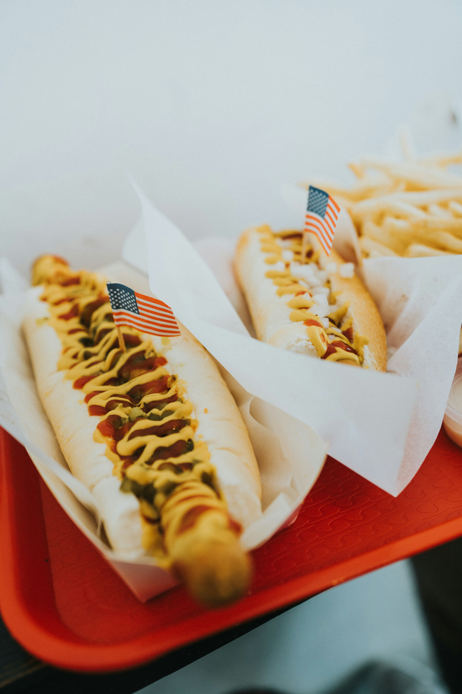

Ingredients
- 4 natural casing beef frankfurters (Boar's Head brand preferred)
- 4 hot dog buns (with poppyseeds if you can find them)
- 1 small onion, diced fine
- 3 - 4 teaspoons sweet pickle relish (bright green type if you can find it!)
- 1 cold-pack kosher dill pickle, quartered lengthwise
- 1 - 8 small tomatoes, sliced into julienne strips
- 4 - 8 pickled sport bell peppers or tiny hot peppers (optional)
- Düsseldorf-style brown mustard with horseradish (or yellow mustard)
- Celery seed
- Poppy seed (omit if using seeded buns)
- Beer, for simmering (standard golden lager preferred; not authentic) (optional)
Description
A long-time family favorite. The authentic stands use Vienna Beef franks and buns with poppy seeds and that trademark green relish and yellow mustard. If you're not fortunate enough to live near a stand (like us), this home version does nicely (with my own preferred changes of course)! The natural casing frankfurters have a pleasant "pop" when you bite them and are far superior to normal hot dogs. I don't advise using serranos in place of sport peppers as they are not the same type of chile and the serranos are MUCH hotter (as well as not usually being found pickled).
Recipe credit:
Steps
- Simmer frankfurters in beer or water for approximately 10 minutes.
- Warm buns in the microwave, until slightly warm and soft.
- Assemble hot dogs: place one frankfurter in each bun.
- Add mustard to taste.
- Top each hot dog with a dill spear, relish, onion, tomato, and 1-2 sport peppers (Jalapeños can be substituted if unavailable).
- Sprinkle with celery seed and poppy seeds (omit poppy seeds if using poppy seed buns).
- Serve.
Notes
Ready In: 25mins, Ingredients: 11, SERVING: 4
Nutrition
Nutrition Information (per serving, based on a 4-serving recipe):
- Calories: 299 (14% Daily Value)
- Calories from Fat: 131g (44% Daily Value)
- Total Fat: 14.6g (22% Daily Value)
- Saturated Fat: 5.4g (27% Daily Value)
- Cholesterol: 22.5mg (7% Daily Value)
- Sodium: 888.1mg (37% Daily Value)
- Total Carbohydrate: 31.8g (10% Daily Value)
- Dietary Fiber: 3.7g (14% Daily Value)
- Sugars: 8.2g (32% Daily Value)
- Protein: 10.8g